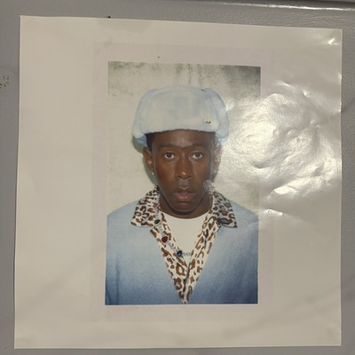
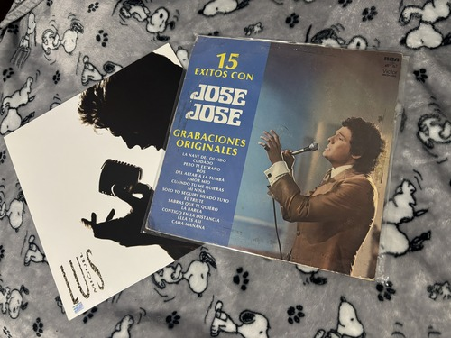
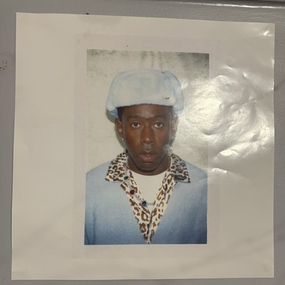
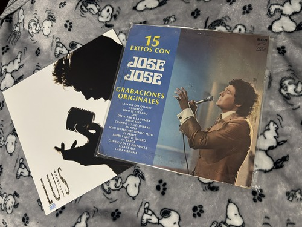

About Me
I really enjoy music and love to listen to different styles of it, some of my faverites are indie, early 2000's reggeaton and pop, and I'm currently going through a norteno phase of music. Music is a very big aspect of my culture and of me as a person, I listen to music all the time and also enjoy collecting posters, vinyls, and going to concerts/music festivals.
I collect vinyls and posters from all different genres (mainly spanish and indie) though, recently I began collecting vintage mexican vinyls from about the 70s-90s. Where I live there are a lot of record shops and I frequent eBay to find new vintage vinyls for sale.
Here are some pictures and a video of my posters and vinyls. :)
 



I also really like cars, specifically Japanese drift cars. One I think is very cute is the Nissan 350z, it's shape reminds me of a beatle becuase of its roundness and I really like how shart the head/tail lights are.
American muscle cars are also one of my favorite kinds of car,specifically the Mustang Dark Horse. I collect car figures and have a couple of that car in different sizes! My most recent one is one from the Fast and Furious line in the color black; the doors, drunk, and hood are all articulate and it comes with a stand to display it on!
I love everything about many different kinds of cars! Here is my Pinterest to see more cars and posters about cars!